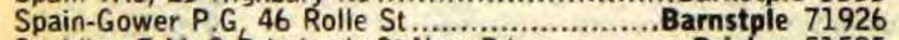

Patrick G Spain-Gower cMar 1943 - 2012
[ Home ] | [ Calendar ] | [ Surnames Index ] | [ Census Index ] | [ Family History ]The child of Cecil Spain-Gower (a fitters mate at the water works) and Lilian Carr, Patrick Spain-gower, the fourth cousin on the father's side of Nigel Horne, was born in Thanet, Kent, England c. Mar 19431. He married Margaret Denny in Barnstaple, Devon, England around Aug 19693. In 1978, he was living at 46 Rolle Street in Barnstaple4. That is also where he died on Apr 9, 2012 in Barnstaple1,2.
Parents
- Cecil was born on Mar 26, 1913
- Lilian Jessie was born on Mar 27, 1915
Citations
- England & Wales Deaths 2007-2020 - Findmypast
- https://funeral-notices.co.uk/notice/patrick+spain-gower/2827915
- England & Wales Marriages 1837-2005 - Findmypast
- British Phone Books, 1880-1984
Notes
www.192.com.
Media
1978 Phone Book

England & Wales Deaths 2007-2020 - BMD/D/MILLEN/000537119
England & Wales marriages 1837-2005 - BMD/M/1969/3/PZ/000382/043
Family Tree

Generated by ged2site. Last updated on Jun 11, 2024